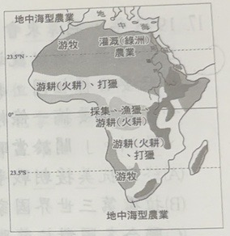
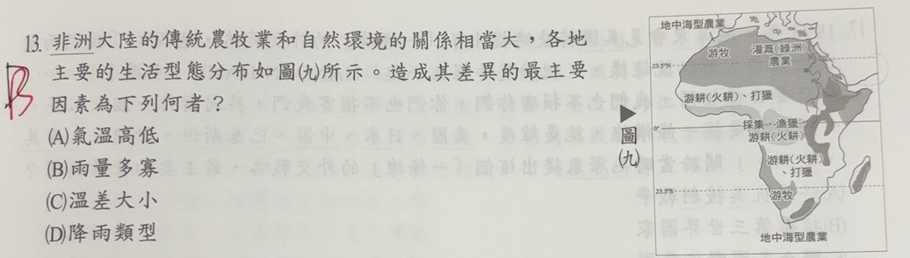

分享原卷｜第13題
完整原題

非洲大陸的傳統農牧業和自然環境的關係相當大，各地主要的生活型態分布如圖（九）所示。造成其差異的最主要因素為下列何者？
(A) 氣溫高低
(B) 雨量多寡
(C) 溫差大小
(D) 降雨類型
先想一想，再查看答案、解說與原圖
原卷作答：13@錯題D → B
(B) 雨量多寡
逐項解析
| 選項與原句 | 判讀 | 句意與判斷理由 |
|---|---|---|
| (A) 氣溫高低 | 不選 | 本圖生活型態差異最主要受水分限制。 |
| (B) 雨量多寡 | 應選 | 雨量多寡影響傳統農牧方式與分布。 |
| (C) 溫差大小 | 不選 | 溫差不是圖中整體分布的主要線索。 |
| (D) 降雨類型 | 不選 | 降雨形成的機制與雨量多寡不是同一概念。 |
詳細說明與解題步驟
答案B。傳統農牧方式很受水分可利用程度影響：乾燥地區難以穩定種植，常以游牧因應；赤道附近較濕潤，雨林地區可見採集、漁獵及游耕；不同雨量帶形成不同生產型態。原圖也標有綠洲灌溉等方式，說明水資源是重要限制。
A氣溫、C溫差也可能影響農業，但不是這張非洲整體分布圖最主要的分類線索。D降雨類型著重降雨形成機制，與B直接比較雨量的多寡不同；不能把地形雨、對流雨等名稱拿來取代水分供給。
這是本題傳統生產型態的簡化比較，不表示非洲所有地區都只有原圖列出的生業，也不由圖虛構精確年雨量或作物產量。
核對註記：已實開本題真正User原卷及必要附圖，保留完整可讀題幹與ABCD；日期取首次原提問台灣日，非實際考試日期。冊次章節無證據，歸綜合。
原圖（僅本題）
